复习一下……
没有太详细的原理性内容
像素灰度变换
逐像素处理，变换每个像素的灰度 \[ L' = T(L)\in[0,255] \]
像素强度变化
根据变换函数\(T\)的不同，可以进行不同的处理。比如\(s=clog(1+r)\)进行log变换，\(s=cr^{\gamma}\)幂律变换，不同的变换函数对灰度值的处理如下图：
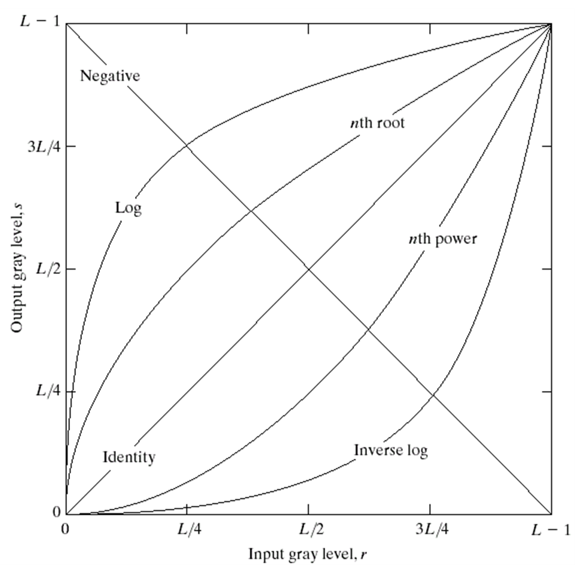
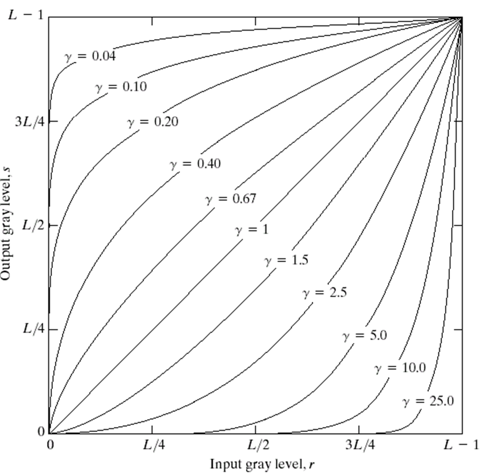
对比度变化
强度变化的目标是图像整体变亮或者变暗，而对比度调整是让亮的更亮，暗的更暗（对比度增强）
对比度拉伸
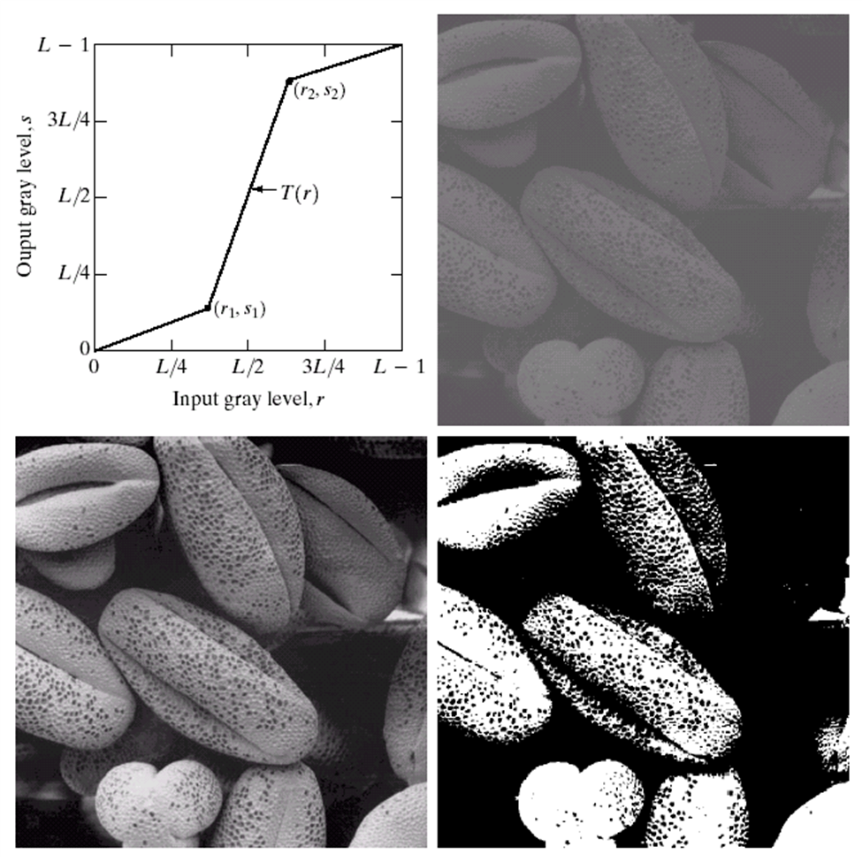
左上：函数形式；右上：原图；左下：对比度拉伸的结果；右下：阈值化的结果
在matlab里，可以使用imadjust函数去调整对比度范围
1 | f1=imadjust（f，[low_in high_in],[low_out high_out],gamma） |
参数2为输入像素强度范围，参数3为输出像素强度范围，将较大的灰度值变化区间压缩为较小的灰度值变化区间就能降低图片对比度，反之可以增强对比度。输入范围可以stretchlim函数自动确定。
缩放
最近邻
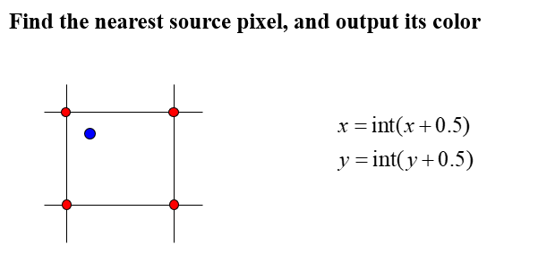
双线性插值
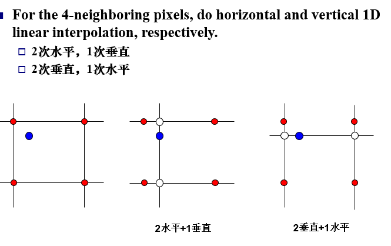
双三次插值
使用周围16个像素做插值，考虑一维情况： 1
X = {10,20,30,40};
假设要求X[0.5]，很容易想到以距离为权重将四个像素值加权 \[ X[0.5]=\omega(1.5)X[-1]+\omega(0.5)X[0]+\omega(-0.5)X[1]+\omega(-1.5)X[2] \] 在双三次插值法中，权重通常为 \[ \omega(x)=\left\{ \begin{aligned} &(a+2)|x|^3-(a+3)|x|^2+1 &\quad|x|\le1 \\ &a|x|^3-5a|x|^2+8a|x|-4a &\quad1<|x|<2 \\ &0 &\quad |x|>2 \end{aligned} \right. \]
图像几何操作
齐次坐标+变换矩阵

2D仿射变换：线性变换+平移变换
刚性变换：只包含平移+旋转
相似变换：只包含平移、旋转、等比缩放
空间滤波
在源图像上逐像素移动滤波器，通过事先定义的关系计算滤波器响应值，结果为目标图像对应位置的像素值
均值滤波、最大值滤波、中值滤波比较简单，跳过原理
快速均值滤波：用积分图快速计算出对应滤波范围内的像素值之和
均值滤波：降噪，但模糊边缘
中值滤波：去除椒盐噪声
边界值处理：滤波核有可能落在图像区域之外
- 填充（常数或者镜像）
- 边界处调整滤波核大小
线性滤波
邻域像素加权平均 \[ p'=\sum_{i\in N(p)}w_ip_i \] \(w\)即为滤波核（或者叫模板，或者叫mask），根据滤波核数值不同可以分为平滑滤波和锐化滤波
高斯平滑滤波
在二维空间中，该函数生成的曲面形式如下图：
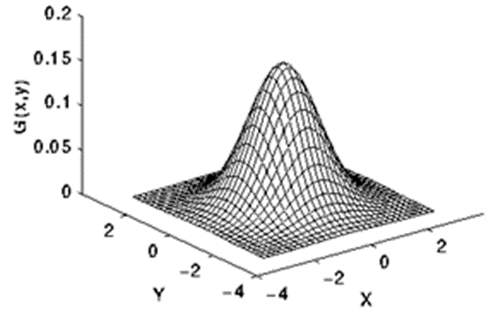
因为越靠近原始像素权重越大，所以高斯平滑相对均值滤波能更好地保边
实现中可以利用高斯滤波核的行列可分离去降低复杂度
基本锐化滤波
锐化滤波核的特点：滤波核和为0，中心为正数，边缘为负数
滤波后可能出现负值或者大于255，要进行比例变换或者截断
体现的是图像的变化情况，比如用于边缘检测
梯度滤波器
图像一阶导：\(f'(x)=f(x+1)-f(x)\)
图像二阶导：\(f'(x)=f(x+1)+f(x-1)-2f(x)\)
一阶导数通常会产生较宽的边缘。 二阶导数对于阶跃性边缘中心产生零交叉，而对于屋顶状边缘（细线），二阶导数取极值。 二阶导数对细节有较强的响应，如细线和孤立噪声点。所以一般先进行高斯滤波去除噪声
三种典型的一阶导（梯度）算子：Prewitt Robert Sobel
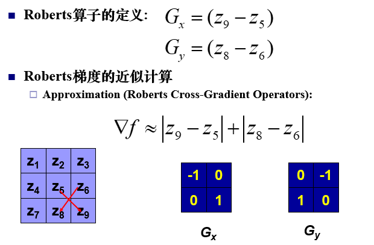
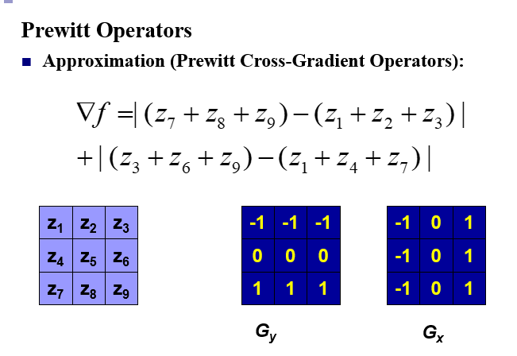
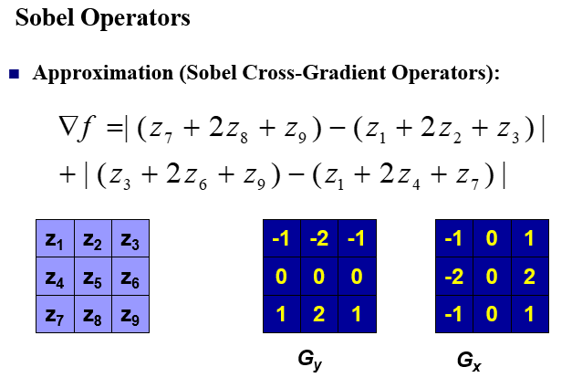
拉普拉斯算子
定义为x,y方向上二阶导的和
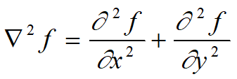
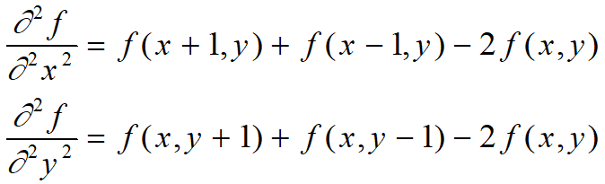
拉普拉斯算子可以做图像增强：先用拉普拉斯算子做图像滤波，得到边缘信息，然后再与原图叠加，就能得到锐化之后的图像
双边滤波
高斯滤波虽然相对于均值滤波一定程度上保边效果更好，但是也会模糊边缘
双边滤波在计算权重的时候，不仅考虑了空间位置关系，也考虑了像素颜色的差值
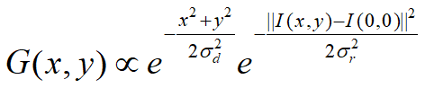
像素之间的颜色差与权重成反比关系
直方图
直方图是所有像素灰度在图像中出现的概率，逐项求和为1
直方图均衡化
把一个直方图分布比较集中的图像进行变换，将其直方图变为在全部灰度范围内均匀分布。做法是对每个图像像素重新确定其像素值，对图像做非线性拉伸。
假设输入为0-255范围的灰度图，每个灰度的概率函数为 \[ p(k)=\frac{n}{m} \] 对每个灰度为k的像素，其直方图均衡化结果\(s\)为 \[ s = 255*\sum_{i=0}^{k}p(i) \]
直方图匹配
输入：原始图像、指定的概率密度函数
求解：具有规定形状的直方图的图像
原理：不管原图像的直方图是什么形状，直方图均衡化后的直方图都是一样的。并且映射函数T规定为单调递增的，即变换后的直方图可以经过逆变换回到原直方图。
步骤：
- 计算原始图像直方图\(p(r)\)，然后做直方图均衡化得到灰度\(s\)
- 对给定形状的直方图做均衡化，得到原始像素值\(z\)与变换后像素值\(G(z)\)的映射并存储
- 对\(s\)，找最接近的\(G(z)\)，然后根据上一步的映射进一步找对应的\(z\)，存储\(s\)到\(z\)的映射
- 使用上一步得到的映射，将灰度为\(s\)的像素变换为灰度为\(z\)，得到具有指定直方图的图像
膨胀和腐蚀
概念和定义太麻烦不想写了，简单说就是核卷积平移过程中，膨胀是如果核覆盖区域与图像中要处理的连通域有交集，就将对应像素赋值为连通域内的值；腐蚀是如果核覆盖区域是连通域的子集，就将对应像素赋值为连通域内的值。
膨胀和腐蚀都是用核跟原图去做卷积，假设图像中连通域是255，背景是0
对于膨胀来说，求的是局部最大值，把核覆盖区域像素点的最大值赋给当前核中心的图像像素点。所以膨胀的结果会让图像中的连通域扩大
腐蚀则是与膨胀相反的操作，求的是局部最小值，所以对于图像中的连通域会缩小一圈
膨胀应用：桥接文字裂缝
腐蚀应用：去除图像细节
开操作：先腐蚀再膨胀，能消除细小物体，在纤细处分离物体和平滑较大物体边界的作用
闭操作：先膨胀再腐蚀，能填充物体内细小空洞，连接邻近物体和平滑边界
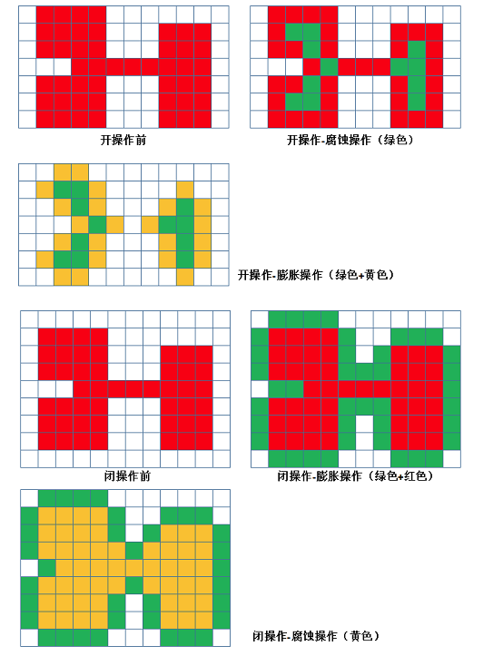
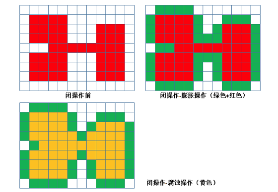
图像结构检测
Canny边缘检测器
边缘检测的要求：检测准确、定位准确、单像素响应
步骤：
高斯滤波：降噪，因为Canny是使用梯度的，梯度对噪声敏感
计算每个像素点的梯度值与方向（Sobel算子）
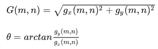
非极大值抑制：高斯模糊的过程中，边缘也有可能被模糊放大，为了检测出单像素宽度的边缘，需要非极大值抑制去“瘦”边，
做法是：将当前像素的梯度强度与沿正负梯度方向上的两个相邻像素进行比较，如果当前像素的梯度强度与另外两个像素相比最大，则该像素点保留为边缘点（一般两个相邻像素的梯度会做线性插值）
高低阈值判断边缘：对于抑制之后的像素，如果梯度值大于高阈值，确定为边缘；低于低阈值，非边缘；中间部分，如果像素与确定为边缘的像素点邻接，则判定为边缘点
霍夫变换直线检测
图像空间中的一个点，对应k-b参数空间中的一条线，参数空间中每两条直线的交点可以在图像空间中确定一条直线，可以选择由较多直线汇成的点，其参数空间中的坐标值作为图像空间中直线方程参数
问题：k-b参数空间无法描述垂直于x轴直线
改进：极坐标系空间\(r-\theta\)
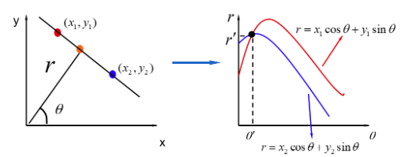
变换后图像空间中的每个点映射为极坐标空间下的一条正弦曲线；图像空间中共线的点对应的正弦曲线相交于一点，然后做投票，选出局部极大值，再用阈值去过滤
理论上只要能用参数方程表示的基元，都能转到霍夫空间做投票检测
图像特征
特征点：能够被稳定检测（可重复）、易于匹配
Harris角点检测
根据的是角点的梯度特征：平坦处的点所有方向梯度是相同的，边缘点梯度至少有一个主方向，而角点处图像梯度至少有两个主方向
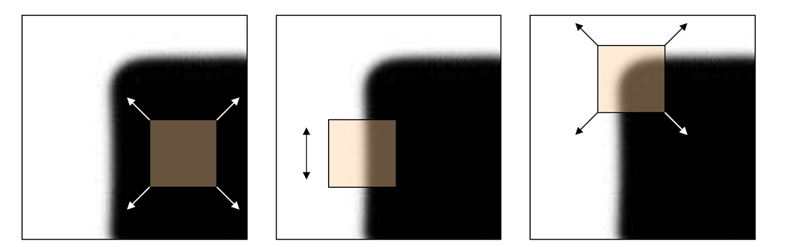
给的像素点\((x,y)\)，用一个窗口发生平移去计算其不同方向的像素值变化：
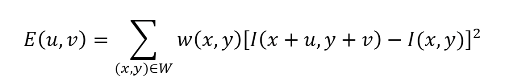
用泰勒展开替换公式中的\(I(x+u,y+v)\),然后做化简改写为矩阵相乘的形式： 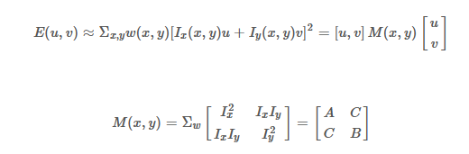
Harris没有直接使用\(E\),而是对矩阵\(M\)进行分析，因为我们希望的是\(M\)能够使得\(u,v\)变化时使\(E\)的变化程度尽可能大。\(M\)是一个二次型矩阵，可以将\(E\)的二次型矩阵形式表示为为一个椭圆
\(M\)的两个特征值反应了变化最快的方向和变化最慢的方向，如果是角点区域，则两个特征值都要足够大；而边缘区域应该是两个特征值一个很大一个很小
Harris也没有直接去求特征值，而是定义了一个角点响应函数 \[ R=\lambda_1 \lambda_2 - k(\lambda_1 +\lambda_2)^2=det(M)-k(trace(M))^2 \] 检测出来以后可以对所有角点的\(R\)响应 值进行排序，得到\(R\) 值最大的 n 个角点作为特征点；以及对一个局部区域取\(R\)最大值点作为角 点
Harris的问题在于对图像尺度变化敏感，某一个尺度上不是角点在另一个尺度可能是
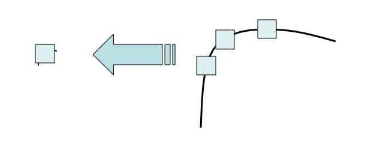
尺度空间/图像金字塔
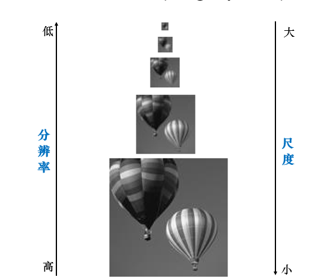
图像金字塔：
对原始图像进行多尺度的采样，生成不同分辨率的图像，以金字塔方式排列，向上尺寸逐渐降低
高斯金字塔：
高斯滤波器平滑图像+降采样平滑后图像，所以构建过程中损失了图像的细节信息
拉普拉斯金字塔：
金字塔的每层存储的是图像和平滑后图像的差值，最高层保留的是小图
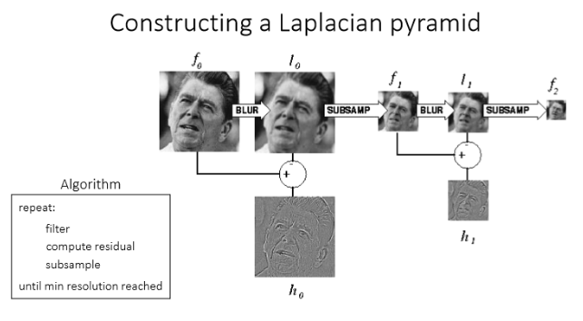
由于拉普拉斯金字塔保留了是细节信息+最终小图，所以可以通过上采样+融合细节信息的方法进行图像恢复
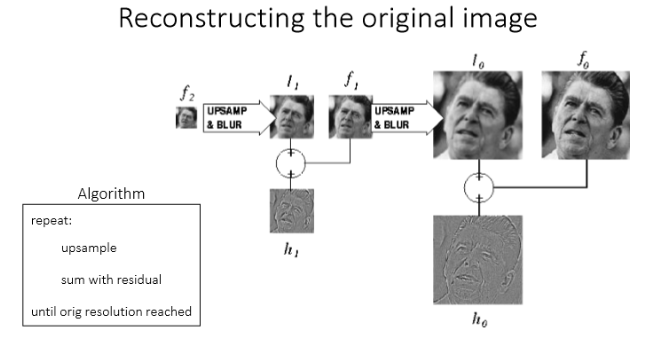
特征描述和匹配
特征转换为特征描述，比如将特征所在局部图像块转换为描述特征的向量
假如忽略几何变换（旋转、缩放等），可以使用的方法：
SSD(Sum of Square Difference)
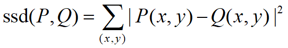
SAD (Sum of Absolute Difference)
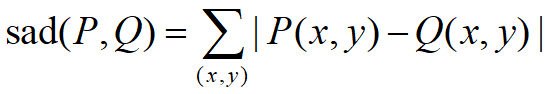
NCC (Normalized Cross Correlation)
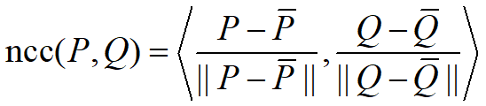
SIFT
- 构建高斯金字塔，不同于之前介绍的是，SIFT为了让尺度体现连续性，在金字塔每一层都包含了多张图像，这些图像合称为一个Octave，这些图像是使用不同参数做高斯模糊得到的。具体实现：(1) 将原图像扩大一倍作为初始图像，将初始图像经参数为\(\sigma\)的高斯平滑之后作为第1组金字塔的第2层，对第二层做参数为\(k\sigma\)的高斯平滑作为第三层……，每次平滑参数都为上一次的\(k\)倍，如此重复得到\(L\)层的Octave；(2) 将第1组倒数第三层图像做降采样大小减小为原来的一半，得到的图像作为第2组的初始图像，重复之前的过程。（3）继续重复，直到生成整个高斯金字塔
- 计算高斯差分金字塔近似代替高斯-拉普拉斯金字塔
- 空间极值点检测，每一个像素点与其26邻域进行比较，如果是一个极大或极小值，则选为初步的关键点。这里是在DoG中检测，所以如果要得到\(S\)个尺度下的极值点，需要\(S+2\)层DoG，则原始的高斯金字塔需要\(S+3\)层。
- 特征点精确定位：将DoG空间拟合，从而找到离散空间中极值点在连续空间中的位置。
- 消除边缘响应。
- 确定特征点主方向。统计关键点邻域内的像素梯度和方向，这里是将360°离散化成若干个区间，统计位于该区间的像素梯度。选择直方图最高的作为主方向（其他实现细节：只保留峰值大于主方向峰值80％的方向作为该关键点的辅方向；对于同一梯度值的多个峰值的关键点位置，在相同位置和尺度将会有多个关键点被创建但方向不同；离散的梯度方向直方图要进行插值拟合处理，来求得更精确的方向角度值等）
- 特征点描述
RANSAC
从匹配样本中随机取样，寻找一致的样本点。
先随机取4对匹配点，计算出单应矩阵\(H\)
计算所有匹配样本在\(H\)下的重投影误差，小于阈值的加入内点inliers集合
如果内点集的size大于当前最优的内点集，更新最优
重复上述步骤直到内点数量大于阈值要求，或者迭代了指定次数
三维视觉基础——坐标系变换
从三维模型点到图像上的像素点，一共涉及到四个坐标系之间的变换
- 世界坐标系，原点视情况而定，比如可以在物体中心，单位为mm
- 相机坐标系，原点在相机光心（针孔模型中的真空），z轴和光轴重合
- 图像坐标系，原点在图像和相机光轴的交点处，这个坐标系就是二维坐标了
- 像素坐标系，原点在图像左上角，就是平常在opencv做图像处理中的坐标系

变换过程如下，其中r分量描述旋转，t分量描述平移，f为相机焦距，d为每个像素的长度

相机标定
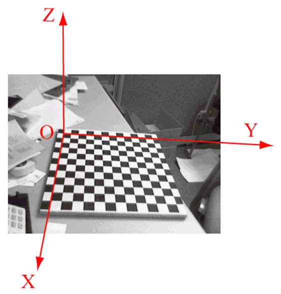
用一个定标板，建立图示的坐标系，那么在三维空间下，定标板上每个点的坐标为\((x,y,0)\)
从相机坐标系到理想图像坐标系： \[ x=K[R|t]X\\ s[x,y,1]^T=K[r1,r2,r3,t][X,Y,0,1]^T\\ s[x,y,1]^T=K[r1,r2,t][X,Y,1]^T \]
从另一角度看（理想图像坐标系到实际图像坐标系），定标板在上图中的平面是从定标板原始平面变换得来的，假设变换矩阵为\(H\),那么\(H\)可以通过二维点的对应求解： \[ x=H[X,Y,1]^T=[h1,h2,h3][X,Y,1]^T \] 所以： \[ K[r1,r2,t]=[h1,h2,h3]\\ K[r1,r2,t]=H \] \(r1,r2\)作为旋转矩阵的两列是单位正交的： \[ r1^Tr2=0\\ r1^Tr1=r2^Tr2=1 \] 又根据\(K,H\)之间的等式关系，可知 \[ r1=K^{-1}h1\\ r2=K^{-1}h2\\ \] 带入\(r1,r2\)关系中可得 \[ h1^TK^{-T}K^{-1}h2=0\\ h1^TK^{-T}K^{-1}h1=h2^TK^{-T}K^{-1}h2=1 \] 令\(B=K^{-T}K^{-1}\),下边的过程直接从课件截图了，敲公式太麻烦： 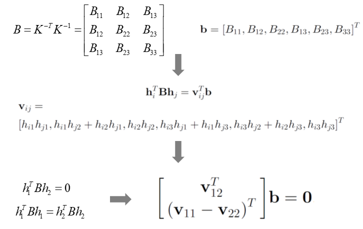
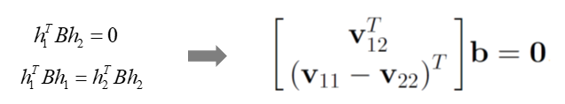
1个\(H\)提供2个对\(b\)的约束，至少需要3个\(H\),所以要从多个不同角度拍摄标定板图像
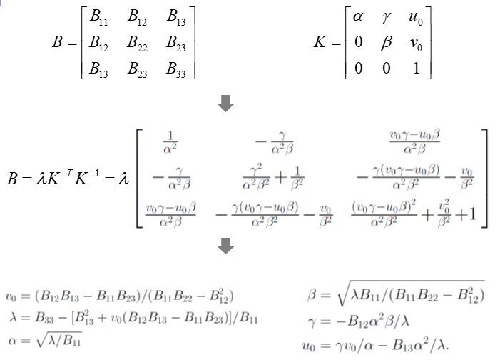
总结过程：
1.打印制作定标板；
2.拍摄定标板在不同视角的多张图像（可以随意移动定标板或相机）；
3.图像特征检测，并与定标板格点关联，建立3D-2D点对应；
4.计算每张定标板图像对应的Homography变换\(H_i\)；
5.通过\(H_i\)求解矩阵\(B\)
6.通过\(B\)计算内参矩阵\(K\)
7.通过最小化投影误差进一步优化\(K\)